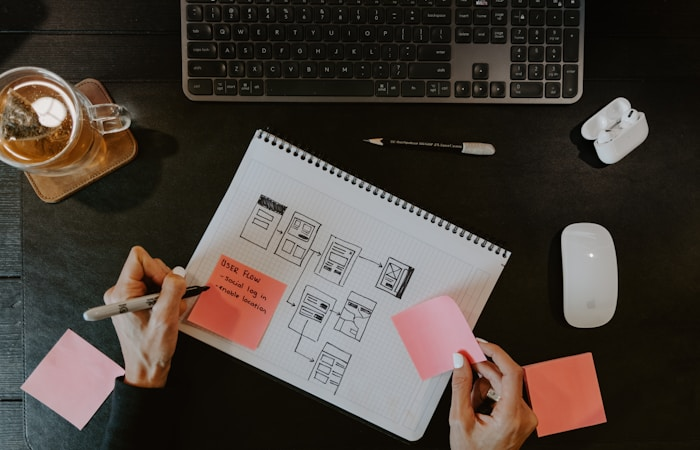

01 UX
UX Design
Comprendre vos utilisateurs avant de concevoir. On utilise des méthodes de recherche pour identifier les vrais problèmes et les opportunités. De l'ethnographie au wireframe en passant par les tests utilisateurs, on structure chaque étape pour livrer des solutions qui répondent vraiment aux besoins du terrain.
- UX Research & Ethnographie
- Wireframe & maquettes basse fidélité
- Tests d'utilisabilité
- Analyse de la concurrence
- Recommandations actionnables